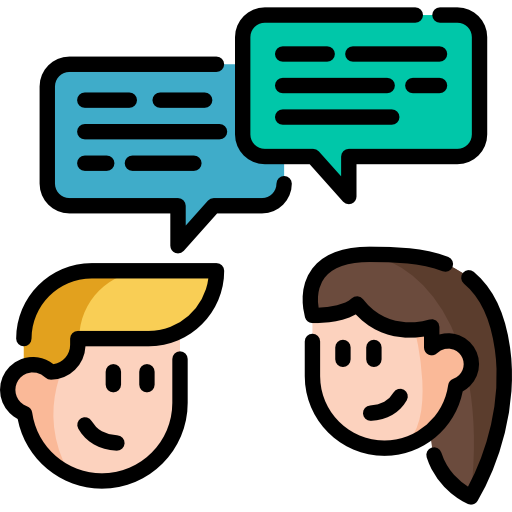
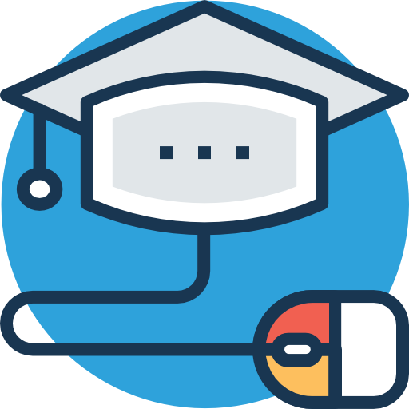
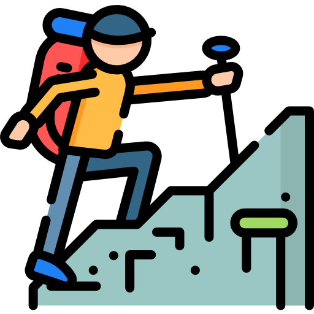

Pavel Křivda
Informace o mně
Pavel Křivda
6. 8. 1993
Karla Čapka 499, Hradec Králové
602 742 484
Vzdělání
| 2020 |
Univerzita Pardubice - Fakulta elektrotechniky a informatiky, nám. Čs. legií 565, 530 02
Pardubice I
Vysokoškolské vzdělání, Inženýr (Ing.), Informační technologie |
| 2016 - 2020 |
Univerzita Pardubice - Fakulta elektrotechniky a informatiky, nám. Čs. legií 565, 530 02
Pardubice I
Vysokoškolské vzdělání, Bakalář (Bc.), Informační technologie |
| 2010 - 2014 |
SPŠ, SOŠ a SOU Hradec Králové, Hradební 1029 - Informační technologie
Odobrné vyučení s maturitou |
| 2001 - 2010 |
ZŠ Václavské náměstí 8, Znojmo 66902
Základní vzdělání |
Praxe
| 2016 |
Invetec s.r.o
.NET Programátor Evropská 863, 664 42 Brno Reference: Karel Rychlý vedoucí IT oddělení 777 123 456, karel.rychly@seznam.cz |
| 2014 - 2016 |
Alien technik s.r.o.
Programátor zdravotních zařízení Reference: Jana Nováková vedoucí IT oddělení 777 123 456, jana.novakova@seznam.cz |
| 2010 - 2014 |
SPŠ, SOŠ a SOU Hradec Králové, Hradební 1029 - Informační technologie
Správce počítačové sítě |
Kurzy
| 2019 | CCNA Routing and Switching: Connecting Networks |
| 2018 | CCNA Routing and Switching: Scaling Networks |
| 2018 | CCNA Routing and Switching: Routing and Switching Essentials |
| 2017 | CCNA Routing and Switching: Introduction to Networks |
| 2014 |
Komunikace v novém tisíciletí
Intenzivní dvoutýdenní kurz zabývající se osobním růstem a komukací s lidmi |
| 2013 | Školení pro vedoucí dětských táborů |
Jazykové znalosti
| Angličtina / pasivně |
Řidický průkaz
| B - Osobní automobil |
Technické znalosti a dovednosti
|
Programování: Java, C#, C, C++, SQL Správa databázových systémů: MySQL, MS SQL, Oracle MS Windows XP/7/8/8.1/10, Linux, Správa počítačových sítí, Textové editory (MS Word), Tabulkový kalkulátor(MS Excel) |
Zájmy
| sport, cestování, fotografování |